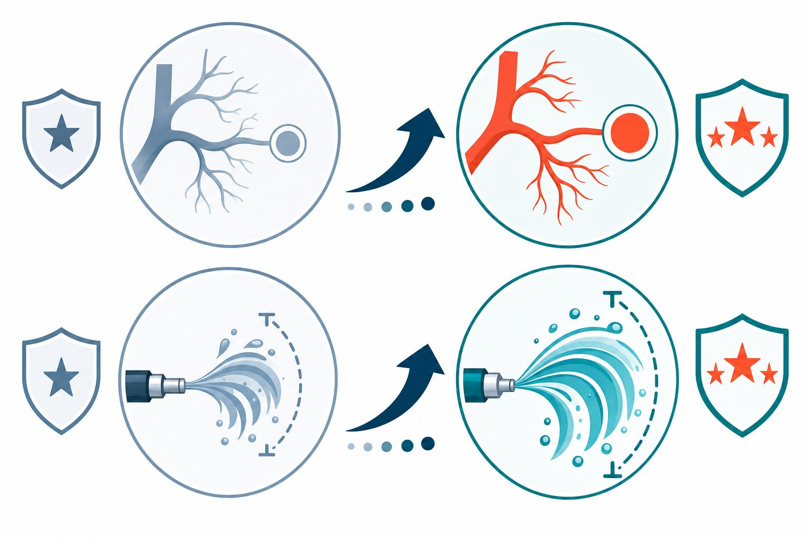

Key Takeaways
- On May 7, 2026, the AUA released an updated BPH/LUTS guideline with 62 recommendations, summarized in three parts in the Journal of Urology.[5] The AUA's previous change to this guideline was its 2023 amendment.[4]
- Coverage of the guideline presentation described prostate artery embolization (PAE) as an acceptable approach but not recommended, citing short-term benefit over observation in select patients but insufficient evidence to recommend it.[6]
- The same coverage reported that new evidence supports daily low-dose tadalafil with an alpha blocker to help preserve ejaculatory function, and named tadalafil plus finasteride as a new option.[6] The FDA label for tadalafil still says it is not recommended with alpha blockers for BPH, partly because of the risk of blood pressure lowering.[11]
- The Part II summary says men on active surveillance for prostate cancer should be told about the unique actions of their BPH medicines.[2] Finasteride lowers PSA by about 50% and, per its FDA label, may increase the risk of high-grade prostate cancer.[12]
- Being suddenly unable to urinate can be life threatening. Seek emergency medical treatment right away.[14]
Why This Guideline Matters Now
On May 7, 2026, the American Urological Association released an updated guideline on benign prostatic hyperplasia and lower urinary tract symptoms (BPH/LUTS), with 62 recommendations.[5] A summary was published in the Journal of Urology in three parts: presentation and evaluation, medical management, and procedural/surgical management.[1][2][3] The AUA had last amended its BPH guideline in 2023.[4]
BPH is common. Experts estimate that it affects 5% to 6% of men ages 40 to 64 and 29% to 33% of men 65 and older, and it is the most common prostate problem in men older than 50.[13]
The 2026 update was presented as patient-centered rather than procedure-based. The Part I summary notes that urinary symptoms can come from the bladder, prostate, urethra, or other causes, that bothersome symptoms are the main reason patients seek treatment, and that shared decision-making therefore plays a critical role in starting and escalating treatment.[1] At the AUA meeting, the panel moderator called it "a patient-centered guideline with shared decision making from the center."[6]
The full guideline is available at AUANet.org. This page summarizes only what the published guideline abstracts, FDA drug labels, and the reports in the reference list state. We could not review the full text of the individual guideline statements, so evidence grades and size or timing thresholds for specific statements are not listed here.
What the 2023 Guideline Looked Like, and What Changed
The 2023 amendment to the AUA's BPH guideline was targeted. It changed statements or supporting text on combination therapy, photoselective vaporization of the prostate, water vapor thermal therapy, laser enucleation, and PAE; added a statement on temporary implanted prostatic devices; and moved transurethral needle ablation and microwave thermotherapy into the background section as legacy technologies.[4] The 2026 update rests on a new systematic review, with literature searches through January 2025 and update searches on December 15, 2025.[1]
The 2026 version is published as a three-part series, with each part summarizing its own set of statements.[1] Presenting it at the AUA meeting, the panel moderator said there were "no dramatic changes," and that earlier guidelines had been updated to reflect new technologies and new approaches.[6]
The changes reported so far fall into five categories:
- Evaluation: Part I covers initial presentation, evaluation, and initial management, and states that standard evaluation is established with appropriate tests and shared decision-making.[1]
- Medical management: Two combinations were reported as newly supported: daily low-dose tadalafil with an alpha blocker, and daily low-dose tadalafil with finasteride.[6] Part II also addresses what men on active surveillance for prostate cancer should be told about their medicines.[2]
- Procedural options: TURP is still the leading surgical procedure, transurethral microwave therapy and needle ablation are now legacy technologies that are no longer recommended, and PAE was described as acceptable but not recommended.[6]
- Newer technologies: The Part III summary lists robotic waterjet treatment and the intraprostatic drug-coated balloon among the procedures it covers.[3]
- Patient counseling: Patient counseling and shared decision-making are described as cornerstones of all three parts.[7]
Part 1: What Changes in Evaluation
The starting point stays the same: patient history and physical examination. The Part I summary says its recommendations also cover the appropriate use of tests and patient counseling.[1] Coverage of the guideline presentation likewise reported that the initial evaluation and approach to treating BPH remain the same.[6]
The topics listed for Part I include the prostate-specific antigen (PSA) blood test, maximum urinary flow rate, urodynamic studies, transrectal ultrasound, and MRI.[1] How and when each test should be used is set out in the full guideline statements. A PSA test is best approached as a conversation, in which you understand what a result could mean for further testing before you decide.
If you are considering a procedure, ask your urologist which tests you need first and why. Tests that measure how well the bladder empties and how fast urine flows help show whether a blockage, the bladder itself, or both are driving symptoms.

Part 2: Medical Management Updates
Alpha blockers and 5-alpha reductase inhibitors (5-ARIs) remain the usual first-line medicines, according to coverage of the guideline presentation.[6] Silodosin is one alpha blocker option. A 2025 review of 23 studies, written mostly by authors affiliated with Sun Pharmaceutical, reported that silodosin was well tolerated across 21 safety studies with minimal cardiovascular adverse events, while retrograde ejaculation or ejaculatory disorder ranged from 0.85% to 34.4% across studies.[10]
The bigger reported shift is in combination therapy. Coverage of the guideline presentation reported that new evidence supports daily low-dose tadalafil with an alpha blocker to help preserve ejaculatory function, and that earlier guidelines had advised against this combination because of a lack of evidence.[6] Daily low-dose tadalafil plus finasteride was also reported as a new medical approach.[6] The FDA label for tadalafil (Cialis) gives a once-daily dose of 5 mg for BPH and says that if tadalafil is started together with finasteride, that use is recommended for up to 26 weeks. The same label says tadalafil is not recommended in combination with alpha blockers for BPH, because the combination has not been adequately studied and because of the risk of blood pressure lowering, and that taking nitrates in any form with tadalafil is contraindicated.[11] If you already take an alpha blocker, talk with your clinician before adding tadalafil.
Related evidence comes from a 2026 phase III randomized trial that enrolled 667 men and compared a fixed-dose combination of dutasteride 0.5 mg (another 5-ARI) plus tadalafil 5 mg with either drug alone for 48 weeks. Symptom scores (IPSS) improved by an average of 9.49 points with the combination vs 4.40 with dutasteride alone (difference −5.09), and 9.53 vs 4.24 with tadalafil alone (difference −5.29), both P<0.001. The trial did not test finasteride or alpha blockers, and side effects were more common with the combination (about 33% vs 21% and 26%).[8]
5-ARIs, finasteride and dutasteride, are used for men with enlarged prostates. Finasteride's FDA label includes use with the alpha blocker doxazosin to reduce the risk of symptomatic BPH progression.[12] The Part II summary says it is important to disclose the unique actions of these medicines to relevant groups, such as men on active surveillance for prostate cancer.[2] One reason: finasteride lowers PSA levels by approximately 50%, and its label says it may increase the risk of high-grade prostate cancer.[12] A 2024 population-based cohort study in JAMA Network Open followed 19,938 men aged 65 or older in Ontario, Canada, with localized prostate cancer. 5-ARI use before diagnosis was not associated with overall mortality (HR 0.98; 95% CI 0.90-1.07) or prostate cancer-specific mortality (HR 1.02; 95% CI 0.83-1.25).[9] Because this observational study looked at use before diagnosis rather than men on active surveillance, it is reassuring about mortality but does not answer every question for men under surveillance. If you take a 5-ARI, make sure whoever follows your PSA knows.
Procedural Evidence: What Changed from 2023 to 2026
The table below summarizes what the 2023 amendment changed and what has been reported about the 2026 update for selected procedures. Evidence grades for the 2026 statements are not shown because we could not review the full statements.[4][6][3]
| Procedure | 2023 Status | 2026 Update | Key Detail |
|---|---|---|---|
| Prostate Artery Embolization (PAE) | Statement changed in the 2023 amendment[4] | Reported as acceptable but not recommended | Reported short-term benefit versus observation in select patients, but insufficient evidence to recommend it.[6] |
| Aquablation (Robotic Waterjet) | Not among the statements changed in 2023[4] | Covered in Part III | Listed among the procedures in the Part III summary.[3] Recommendation wording and prostate size range not verified for this page. |
| Microwave Therapy (TUMT) / Needle Ablation (TUNA) | Statements removed; moved to background as legacy technologies[4] | Not recommended | Reported as legacy technologies that are no longer recommended.[6] |
| Intraprostatic Drug-Coated Balloon | Not among the statements changed in 2023[4] | Covered in 2026 | Listed among the procedures in the Part III summary.[3] Recommendation status not verified for this page. |
| HoLEP / ThuLEP | Laser enucleation statement changed in 2023[4] | Covered in Part III[3] | TURP is still the leading surgical intervention, according to coverage of the guideline presentation.[6] |
What This Means for Patients: Two Paths
The 2026 guideline's patient-centered framing can shape how care is organized, whether a patient starts the conversation virtually or in a urology office. Both paths are valid. They serve different patients at different stages of their BPH journey.
Telehealth Path
- Initial symptom assessment using validated IPSS questionnaire
- Medical history: duration, prior UTIs, medications, comorbidities
- Alpha blocker prescription (tamsulosin, silodosin) or tadalafil if ED is also present
- Lifestyle counseling: fluid timing, caffeine reduction, bladder training
- Symptom re-evaluation after starting treatment; escalate to urology if no improvement or new symptoms
- PSA discussion as part of shared decision-making
In-Person Urology Path
- Digital rectal exam (DRE) to assess prostate size and consistency
- PSA blood test after shared decision-making discussion
- Uroflowmetry: maximum flow rate (Qmax) measurement
- Post-void residual (PVR) ultrasound
- Urodynamic studies if diagnostic uncertainty exists
- Procedure selection based on prostate volume, symptom severity, and patient goals, with options such as TURP, laser enucleation (HoLEP), robotic waterjet treatment (Aquablation), or PAE
For men with bothersome symptoms who have not yet tried medicine, the telehealth path can be a reasonable starting point. Lifestyle modification and weight loss are typically the first and least aggressive approaches for many patients.[6] Tadalafil is FDA-approved for BPH symptoms and for men who have both ED and BPH, but its label says it is not recommended together with an alpha blocker for BPH, so that combination is a decision to make with a clinician who knows your blood pressure and your other medicines.[11]
Men whose symptoms do not improve with medicine, who have very large prostates, urinary retention, or recurrent UTIs should be evaluated in person for procedural options. The procedural part of the guideline covers a wide range of options, from TURP and laser enucleation to robotic waterjet treatment, PAE, and newer devices.[3]
Red Flags That Require In-Person Urology
Not every presentation of urinary symptoms belongs in a virtual setting. Certain findings require direct evaluation and cannot be safely managed through telehealth alone.
- Sudden or complete inability to urinate (acute urinary retention): this can cause severe pain and be life threatening, so seek emergency medical treatment right away.[14] A health care professional will immediately drain the bladder with a catheter.[15]
- Visible blood in your urine (gross hematuria): tell a health care professional right away.[13]
- Painful, frequent, and urgent need to urinate with fever and chills: tell a health care professional right away.[13]
- Great discomfort or pain in your lower abdomen or urinary tract.[13]
- Rapidly worsening symptoms over days to weeks
- Recurrent urinary tract infections in men
- Suspected elevated PSA requiring prostate biopsy discussion
- Significant post-void residual on prior imaging or symptoms of overflow incontinence
- Neurological symptoms: new onset weakness, incontinence, or saddle anesthesia
- Symptoms that do not improve after an adequate trial of medical therapy
- Symptoms suggesting bladder cancer: painless hematuria, flank pain, weight loss
These red flags do not diminish the value of telehealth for routine BPH management. They define the boundary. A virtual visit that identifies one of these features and redirects the patient to in-person care is doing exactly what it should do.
Bottom Line
The AUA's 2026 BPH guideline is a full update built on a new systematic review, although the panel moderator described "no dramatic changes."[1][6] Alpha blockers and 5-ARIs remain the usual first-line medicines, and lifestyle changes remain the first, least aggressive approach for many men.[6] Tadalafil combinations were reported as newly supported, but the tadalafil label still advises against combining it with alpha blockers for BPH, and finasteride's label notes its effect on PSA and a possible increase in high-grade prostate cancer.[6][11][12]
For patients, the practical message is that there are many treatment options, and the choice belongs to the patient and their clinician together, not to any single algorithm. Patient counseling and shared decision-making are described as cornerstones of all three parts of the guideline.[7]
Whether care starts through a telehealth visit or directly with a urologist, the clinical foundation is the same 62-recommendation document.[5] The 2026 guideline gives both settings more to work with.
Video visits with a board-certified physician for enlarged prostate (BPH) medication management are available through TeleDirectMD. TeleDirectMD is a telehealth practice. This guide is educational, is not sponsored, and contains no affiliate links.
How to cite this guide
Bhavsar P. AUA 2026 BPH Guideline: What's Changed and What It Means for Patients. TeleDirectMD Health Guides. Last reviewed May 2026. https://teledirectmd.com/health-guides/aua-2026-bph-guideline-update/
References
- Goueli R, Badlani GH, Welliver C, et al. "Management of Lower Urinary Tract Symptoms Attributed to Benign Prostatic Hyperplasia: AUA Guideline (2026) Part I: Presentation and Evaluation." J Urol. 2026;216(2):143-151. doi:10.1097/JU.0000000000005097. PMID: 42095481. pubmed.ncbi.nlm.nih.gov
- Goueli R, Badlani GH, Welliver C, et al. "Management of Lower Urinary Tract Symptoms Attributed to Benign Prostatic Hyperplasia: AUA Guideline (2026) Part II: Medical Management." J Urol. 2026;216(2):152-160. doi:10.1097/JU.0000000000005098. PMID: 42095477. pubmed.ncbi.nlm.nih.gov
- Goueli R, Badlani GH, Welliver C, et al. "Management of Lower Urinary Tract Symptoms Attributed to Benign Prostatic Hyperplasia: AUA Guideline (2026) Part III: Procedural/Surgical Management." J Urol. 2026;216(2):161-170. doi:10.1097/JU.0000000000005099. PMID: 42095468. pubmed.ncbi.nlm.nih.gov
- Sandhu JS, Bixler BR, Dahm P, et al. "Management of Lower Urinary Tract Symptoms Attributed to Benign Prostatic Hyperplasia (BPH): AUA Guideline Amendment 2023." J Urol. 2024;211(1):11-19. Published online September 14, 2023. doi:10.1097/JU.0000000000003698. PMID: 37706750. pubmed.ncbi.nlm.nih.gov
- American Urological Association. "American Urological Association Releases the Management of Lower Urinary Tract Symptoms Attributed to Benign Prostatic Hyperplasia Guideline." Press release, GlobeNewswire. May 7, 2026. Accessed November 15, 2026. globenewswire.com
- "Updated BPH guidelines focus on patients, not procedures." AUA Daily News (meeting coverage). May 16, 2026. Accessed November 15, 2026. auadailynews.org
- "New 2026 AUA Management of LUTS Attributed to BPH Guideline." Guideline Central Insights. Undated web page. Accessed November 15, 2026. guidelinecentral.com
- Lee SW, Lee SH, Kim JH, et al. "Combined therapy with dutasteride and tadalafil vs dutasteride or tadalafil monotherapy in benign prostatic hyperplasia: a randomised phase III trial." BJU Int. 2026;137(4):698-707. doi:10.1111/bju.70163. PMID: 41667130. PMCID: PMC12962842. pmc.ncbi.nlm.nih.gov
- Hamilton RJ, Chavarriaga J, Khurram N, et al. "5-α Reductase Inhibitors and Prostate Cancer Mortality." JAMA Netw Open. 2024;7(8):e2430223. doi:10.1001/jamanetworkopen.2024.30223. PMID: 39190306. jamanetwork.com
- Akhtar OS, Singh V, Bhojani KA, et al. "A Comprehensive Review of the Clinical Evidence on the Efficacy, Effectiveness, and Safety of Silodosin for the Treatment of Benign Prostatic Hyperplasia." Cureus. 2025;17(6):e85445. doi:10.7759/cureus.85445. PMID: 40621239. PMCID: PMC12228970. pmc.ncbi.nlm.nih.gov
- CIALIS (tadalafil) tablets, film coated. Prescribing information. Eli Lilly and Company. Revised 3/2026. DailyMed, U.S. National Library of Medicine. Accessed November 15, 2026. dailymed.nlm.nih.gov
- PROSCAR (finasteride) tablets, film coated. Prescribing information. Organon LLC. Revised 3/2026. DailyMed, U.S. National Library of Medicine. Accessed November 15, 2026. dailymed.nlm.nih.gov
- National Institute of Diabetes and Digestive and Kidney Diseases. "Enlarged Prostate (Benign Prostatic Hyperplasia)." Last reviewed June 2024. Accessed November 15, 2026. niddk.nih.gov
- National Institute of Diabetes and Digestive and Kidney Diseases. "Definition & Facts of Urinary Retention." Last reviewed December 2019. Accessed November 15, 2026. niddk.nih.gov
- National Institute of Diabetes and Digestive and Kidney Diseases. "Treatment of Urinary Retention." Last reviewed December 2019. Accessed November 15, 2026. niddk.nih.gov